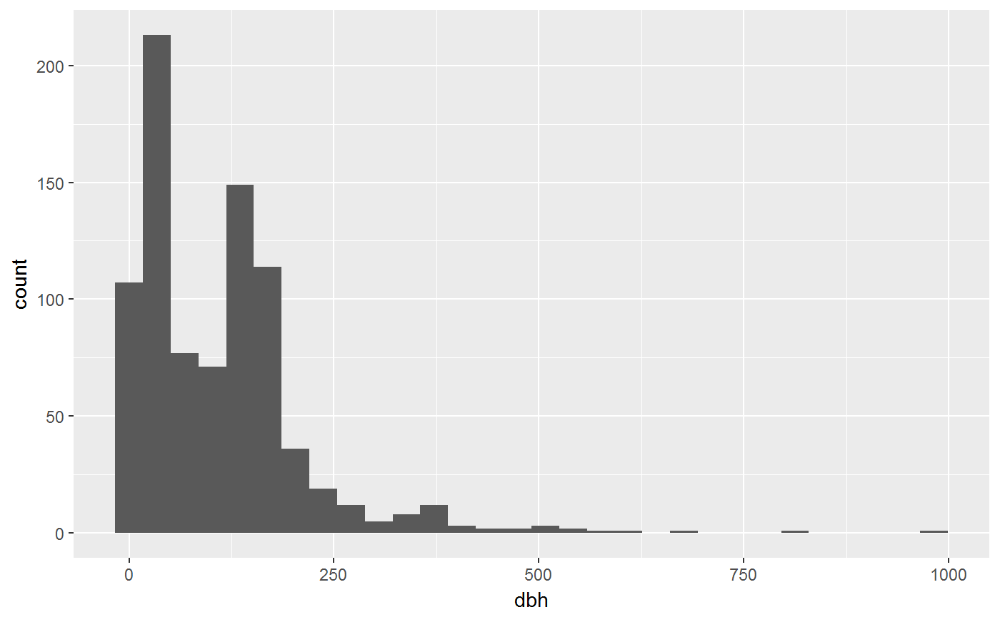

Setup
Data
You may load your own data. Here I’ll use data from the fgeo.data package – which comes with fgeo.
str(fgeo_index_datasets())
#> 'data.frame': 46 obs. of 2 variables:
#> $ package: chr "bciex" "bciex" "bciex" "bciex" ...
#> $ dataset: chr "bci_elevation" "bci_habitat" "bci_mat" "bci_plotdim" ...I’ll use data of stems censused in Luquillo, Puerto Rico (https://forestgeo.si.edu/sites/north-america/luquillo).
# ?fgeo.data::luquillo_stem6_random
stem <- luquillo_stem6_random
str(stem)
#> Classes 'tbl_df', 'tbl' and 'data.frame': 1324 obs. of 19 variables:
#> $ treeID : int 104 119 180 180 180 180 602 631 647 1086 ...
#> $ stemID : int 143 158 222 223 224 225 736 775 793 1339 ...
#> $ tag : chr "10009" "100104" "100171" "100171" ...
#> $ StemTag : chr "10009" "100104" "100095" "100096" ...
#> $ sp : chr "DACEXC" "MYRSPL" "CASARB" "CASARB" ...
#> $ quadrat : chr "113" "1021" "921" "921" ...
#> $ gx : num 10.3 182.9 164.6 164.6 164.6 ...
#> $ gy : num 245 410 410 410 410 ...
#> $ MeasureID: int 582850 578696 NA NA 617046 617049 614253 598429 614211 603131 ...
#> $ CensusID : int 6 6 NA NA 6 6 6 6 6 6 ...
#> $ dbh : num 195 44.9 NA NA NA 46.1 33.1 139 248 176 ...
#> $ pom : chr "1.45" "1.25" NA NA ...
#> $ hom : num 1.45 1.26 NA NA NA 1.34 1.3 1.25 1.35 1.42 ...
#> $ ExactDate: num 16911 17017 NA NA 17017 ...
#> $ DFstatus : chr "alive" "alive" NA NA ...
#> $ codes : chr "MAIN;A" "MAIN;A" NA NA ...
#> $ countPOM : num 1 1 NA NA 1 1 1 1 1 1 ...
#> $ status : chr "A" "A" "G" "G" ...
#> $ date : num NA NA NA NA NA NA NA NA NA NA ...For a description of the columns see ?data_dictionary.
str(data_dictionary)
#> Classes 'tbl_df', 'tbl' and 'data.frame': 242 obs. of 3 variables:
#> $ table : chr "Census" "Census" "Census" "Census" ...
#> $ column : chr "CensusID" "PlotID" "PlotCensusNumber" "StartDate" ...
#> $ description: chr "Primary key, an integer automatically generated to uniquely identify a census." "Foreign Key to Site table." "Integer census number for an individual plot, 1=first census, 2=second census, etc. If there are more than one "| __truncated__ "Date on which the first measurement of the census was taken." ...
cols <- names(stem)
subset(data_dictionary, column %in% cols)
#> # A tibble: 20 x 3
#> table column description
#> <chr> <chr> <chr>
#> 1 Census CensusID Primary key, an integer automatically~
#> 2 CensusQuadrat CensusID Foreign Key to Census table.
#> 3 DataCollection CensusID Foreign Key to Census table.
#> 4 DBH CensusID Foreign Key to Census table.
#> 5 DBH ExactDate Date on which the measurement was take~
#> 6 DBHAttributes CensusID Foreign Key to Census table.
#> 7 Measurement MeasureID Primary key, an integer automatically~
#> 8 Measurement CensusID Foreign Key to Census table.
#> 9 Measurement ExactDate "Date on which measurement has been do~
#> 10 MeasurementAttributes MeasureID Foreign Key to Measurement table.
#> 11 MeasurementAttributes CensusID Foreign Key to Census table.
#> 12 RemeasAttribs CensusID Foreign Key to Census table.
#> 13 Remeasurement CensusID Foreign Key to Census table.
#> 14 Remeasurement ExactDate "Date of remeasurement. (format is yy~
#> 15 SpeciesInventory CensusID Foreign Key to Census table.
#> 16 Stem StemTag The stem tag used in the field to iden~
#> 17 TreeAttributes CensusID Foreign Key to Census table.
#> 18 ViewFullTable StemTag The stem tag used in the field to iden~
#> 19 ViewFullTable CensusID Foreign Key to Census table.
#> 20 ViewFullTable ExactDate Date on which the measurement was take~Exploratory data analysis
For a deeper and general approach to exploratory data analysis see this book section. A version adapted for ForestGEO is available here.
Exploring the distribution of status and tree diameter
Two columns that are commonly useful in ForestGEO datasets are status and dbh (diameter at breast height). Let’s begin by understanding what type of variables they are. For this, base R provides useful functions.
status is a categorical variable.
We can count the number of observations in each category with table(), then visualize the result with barplot().

dbh is a continuous numeric variable.
str() shows that there are some missing values of dbh. We can count missing values with there are 484.
And we can visualize its distribution with hist().

Unfortunately hist() dropped missing values silently. For a more informative output you may use ggplot2::geom_histogram(), which also drops missing values but throws a warning.
library(ggplot2)
ggplot(stem, aes(dbh)) +
geom_histogram()
#> `stat_bin()` using `bins = 30`. Pick better value with `binwidth`.
#> Warning: Removed 484 rows containing non-finite values (stat_bin).
We can better understand how missing values of dbh relate to status by extracting only the columns dbh and status, and picking only the rows where dbh is missing.
dbh_status <- stem[c("dbh", "status")]
missing <- subset(dbh_status, is.na(dbh))
unique(missing)
#> # A tibble: 2 x 2
#> dbh status
#> <dbl> <chr>
#> 1 NA G
#> 2 NA DAnother approach is to count missing values.
missing <- transform(stem, na = ifelse(is.na(dbh), TRUE, FALSE))
table(missing$na, missing$status)
#>
#> A D G
#> FALSE 840 0 0
#> TRUE 0 166 318We learn that dbh is missing where a tree is dead (status = A) or gone (status = G). This makes sense and, depending on the type of analysis we want to do, we may want to keep or remove missing values.
Determining tree status based on stem status
Now that we understand out data are read to clean it, for example, by picking alive trees only. At ForestGEO, working with status is so common that fgeo provides a specialized function.
fgeo_funs <- fgeo_index_functions()
subset(fgeo_funs, grepl("status", fun))
#> package fun
#> 49 fgeo.base drop_status
#> 69 fgeo.base pick_status
#> 122 fgeo.tool add_status_tree
#> 135 fgeo.tool filter_statusIn stem, the variable status records the status of each individual stem. How can we determine the status of a tree based on the status of each of its stems? That is the job of add_status_tree().
tree_status <- add_status_tree(stem)
relevant_columns <- c("stemID", "status", "treeID", "status_tree")
head(tree_status[relevant_columns])
#> # A tibble: 6 x 4
#> stemID status treeID status_tree
#> <int> <chr> <int> <chr>
#> 1 143 A 104 A
#> 2 158 A 119 A
#> 3 222 G 180 A
#> 4 223 G 180 A
#> 5 224 G 180 A
#> 6 225 A 180 AAlthough the stems which stemID are 222-224 are gone (status = G), for example, the tree (treeID = 180) is alive (status_tree = "A") because at least one stem (e.g. stemID = 225) is alive (status = A).
For an overall overview consider the unique values of status and status_tree for these three datasets: all trees; dead trees. and alive trees:
status_cols <- c("status", "status_tree")
lapply(tree_status[status_cols], unique)
#> $status
#> [1] "A" "G" "D"
#>
#> $status_tree
#> [1] "A" "D"dead_trees <- subset(tree_status, status_tree == "D")
lapply(dead_trees[status_cols], unique)
#> $status
#> [1] "D"
#>
#> $status_tree
#> [1] "D"alive_trees <- subset(tree_status, status_tree == "A")
lapply(alive_trees[status_cols], unique)
#> $status
#> [1] "A" "G" "D"
#>
#> $status_tree
#> [1] "A"Now it’s clear that a tree is said to be dead only if all its stems are dead.
Dropping missing values
We picked alive_trees but some stems of the remaining dataset are gone or missing. This means that their dbh wasn’t recorded – it is missing.
subset(alive_trees, is.na(dbh), c(relevant_columns, "dbh"))
#> # A tibble: 346 x 5
#> stemID status treeID status_tree dbh
#> <int> <chr> <int> <chr> <dbl>
#> 1 222 G 180 A NA
#> 2 223 G 180 A NA
#> 3 224 G 180 A NA
#> 4 2026 G 1652 A NA
#> 5 4054 D 3354 A NA
#> 6 4055 G 3354 A NA
#> 7 4120 G 3405 A NA
#> 8 5488 G 4485 A NA
#> 9 8937 D 7269 A NA
#> 10 9129 D 7389 A NA
#> # ... with 336 more rowsIf you wanted, you can extract non missing values of dbh with !is.na().
fgeo provides a more informative alternative. The result is the same but you get a warning.
Picking tree diameter
Another very common task when working with ForestGEO data is to pick stems of a particular dbh range. fgeo can help you with that.
subset(fgeo_funs, grepl("dbh", fun))
#> package fun
#> 64 fgeo.base pick_dbh_max
#> 65 fgeo.base pick_dbh_min
#> 66 fgeo.base pick_dbh_over
#> 67 fgeo.base pick_dbh_underWhat’s the range of dbh?
Lets pick out lower limit to be 50 mm.
Lets now pick dbh values under 500 mm.
And let’s confirm with a plot range() and hist().
Calculating tree abundance
Counting is a simple yet powerful way to summarize data. By counting unique treeID, for example, you can calculate abundance. fgeo provides some functions to generally count_distinct() occurrences of the values in a variable – for the particular case of treeID this gives you the abundance of each tree.
Here are some questions you can answer by counting things:
(Note that the dataset we are using here is a small sample of the real dataset.)
- How many stems and trees are there in total?
count_distinct(chosen_range, treeID)
#> # A tibble: 1 x 1
#> n
#> <int>
#> 1 502
# Same as
abundance_tree(chosen_range)
#> # A tibble: 1 x 1
#> n
#> <int>
#> 1 502
count_distinct(chosen_range, stemID)
#> # A tibble: 1 x 1
#> n
#> <int>
#> 1 513
# Same as
abundance_stem(chosen_range)
#> # A tibble: 1 x 1
#> n
#> <int>
#> 1 513- How many trees by quadrat?
by_quad <- group_by(chosen_range, quadrat)
abundance_tree(by_quad)
#> # A tibble: 281 x 2
#> quadrat n
#> <chr> <int>
#> 1 1001 1
#> 2 1002 1
#> 3 1005 1
#> 4 1007 2
#> 5 1008 1
#> 6 101 1
#> 7 1010 3
#> 8 1016 3
#> 9 1017 7
#> 10 1018 1
#> # ... with 271 more rowsHow many trees by quadrat by species?
by_quad_sp <- group_by(chosen_range, quadrat, sp)
abundance_tree(by_quad_sp)
#> # A tibble: 424 x 3
#> # Groups: quadrat [?]
#> quadrat sp n
#> <chr> <chr> <int>
#> 1 1001 PREMON 1
#> 2 1002 DACEXC 1
#> 3 1005 DACEXC 1
#> 4 1007 EUGSTA 1
#> 5 1007 MATDOM 1
#> 6 1008 PREMON 1
#> 7 101 PREMON 1
#> 8 1010 CASSYL 1
#> 9 1010 CECSCH 1
#> 10 1010 HOMRAC 1
#> # ... with 414 more rowsAbove you saw that abundance_tree(DATA) and abundance_stem(DATA) generalize to count_distinct(DATA, stemID) and count_unique(DATA, stemID). An even greater generalization is count(). fgeo borrows the function count() (and some friends) from the dplyr package. Today, dplyr::count() appears to be the simplest, the most general and powerful tool to count things. fgeo imports and reexports dplyr::count() (and friends) so it’s available when you run library(fgeo).
For example, here is how to calculate tree abundance by quadrat with count() (see `?dplyr::count()]).
Mapping the distributions of tree species
A commonly useful way to understand species distributions is with a map. But mapping all threes at once is overwhelming. Let’s pick data from, for example, the three quadrats with the greatest number of trees.
Above we already calculated the number of trees_by_quadrat. Now we can sort the data in descending order of n and pick the rows where n is one of the three greatest values. fgeo provides a function that lets you do this in one step.
greatest_n <- pick_top(abundance_tree(by_quad), n, -3)
greatest_n
#> # A tibble: 4 x 2
#> quadrat n
#> <chr> <int>
#> 1 1017 7
#> 2 1516 8
#> 3 1609 5
#> 4 517 5Now we can pick these quadrats from the dataset chosen_range.
subset(fgeo_funs, grepl("map", fun))
#> package fun
#> 100 fgeo.map map_elev
#> 101 fgeo.map map_gx_gy
#> 102 fgeo.map map_gx_gy_elev
#> 103 fgeo.map map_quad_header
#> 104 fgeo.map map_sp_elev
#> 105 fgeo.map map_tag_header
#> 106 fgeo.map maply_quad
#> 107 fgeo.map maply_sp_elev
#> 108 fgeo.map maply_tag
#> 111 fgeo.map theme_map_quad
#> 112 fgeo.map theme_map_tagWe are now ready to map. fgeo has some specialized functions.

We can make this map more informative with elevation data from Luquillo. fgeo includes the dataset luquillo_elevation (from fgeo.data and loaded above when we run library(fgeo)).